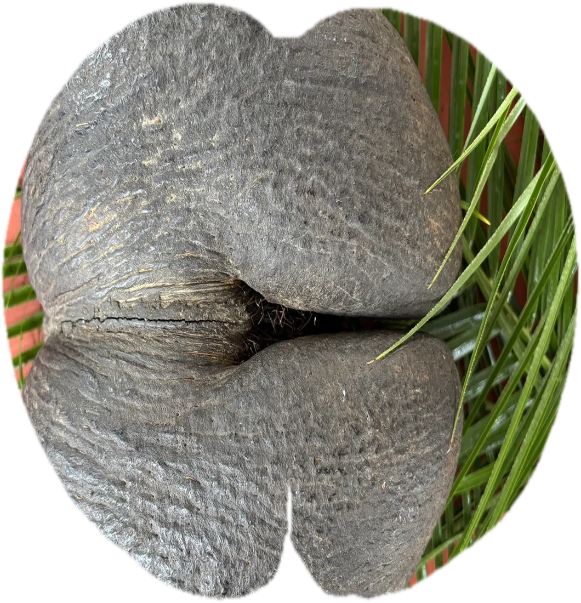

The legend of
L
DOICEA
maldivica
The Coco de Mer palm grows wild in only two places on Earth: the islands of Praslin and Curieuse in the Seychelles.
The most uniquetree in the world.
The Coco de Mer palm grows only in the wild, in forests protected by UNESCO. It is so sensitive to people that every nut collected is monitored by the Seychelles government.


Two palms,male andfemale.
Only the female palm bears the famous double nut. The male palm grows a long catkin covered in small, fragrant yellow flowers, and its shape has inspired island legends for centuries.
Read the legendThere are no Coco de Merplantations anywhere.
Every nut we process comes from wild palms. Only about 8,000 trees remain, and the species is listed as endangered on the IUCN Red List. We let each nut ripen on its mother tree for 6–9 years and only collect it once it falls naturally.


An old cinnamon kiln,a new chapter.
Our shop and factory sit on the former plantation land of the Bradley & Bailey family at Domaine de Val des Prés, today a living example of Creole life, with traditional houses, artisans, plants and food in one place.
The site is a cinnamon kiln, drying cinnamon for export.
The building is used to distil cinnamon leaves.
Our family takes over and begins processing Coco de Mer.
Our shop, factory and free tours in the Craft Village.
The husk becomesperfume.
The husk of the Coco de Mer has a strong, sweet natural aroma. We use it in the fragrances of the Coco De Mer Collection, made in the same factory by the same family.
Discover the perfumes